TMB Mixed-Effects Demand Models
Brent Kaplan
2026-04-21
Source:vignettes/tmb-mixed-effects.Rmd
tmb-mixed-effects.RmdIntroduction
fit_demand_tmb() fits continuous mixed-effects demand
models using Template Model
Builder (TMB). It is the modern alternative to
fit_demand_mixed() (which uses nlme) and
provides several advantages:
-
Automatic differentiation – exact gradients via
compiled C++, replacing the numerical finite-difference approximations
used by
nlme - Laplace approximation – integrates over random effects analytically rather than relying on iterative linearization
- Multi-start optimization – automatically tries multiple starting-value sets and keeps the best fit
- Four equation forms – exponential, exponentiated, simplified, and zero-bounded exponential (zben)
- Factor and covariate support – design matrices for group comparisons with estimated marginal means (EMMs) and pairwise contrasts
This vignette covers fit_demand_tmb() for continuous
consumption data. For two-part hurdle models that
explicitly model zero consumption, see
vignette("hurdle-demand-models"). For individual
NLS curves, see vignette("fixed-demand").
Quick Start
fit <- fit_demand_tmb(
dat,
y_var = "y", x_var = "x", id_var = "id",
equation = "exponential",
random_effects = c("q0", "alpha"),
verbose = 0
)
fit
#>
#> TMB Mixed-Effects Demand Model
#>
#> Call:
#> fit_demand_tmb(data = dat, y_var = "y", x_var = "x", id_var = "id",
#> equation = "exponential", random_effects = c("q0", "alpha"),
#> verbose = 0)
#>
#> Equation: exponential
#> Convergence: Yes
#> Number of subjects: 99
#> Number of observations: 1131
#> Observations dropped (zeros): 569
#> Random effects: 2 (q0, alpha)
#> Log-likelihood: -268.54
#> AIC: 551.07
#>
#> Fixed Effects:
#> Q0.0 alpha.0 log_k logsigma_b logsigma_c logsigma_e rho_bc_raw
#> 1.6944 -4.5060 0.3399 -0.2940 -0.0952 -1.4906 -0.4812
#>
#> Use summary() for full results.
summary(fit)
#>
#> TMB Mixed-Effects Demand Model Summary
#> ==================================================
#>
#> Equation: exponential
#> Backend: TMB_mixed
#> Convergence: Yes
#> Subjects: 99 Observations: 1131
#>
#> --- Fixed Effects ---
#> term estimate std.error statistic p.value
#> Q0:(Intercept) 5.4434 0.4171 13.0512 < 2e-16
#> alpha:(Intercept) 0.0110 0.0012 9.4171 < 2e-16
#> log_k 0.3399 0.0276 12.2980 < 2e-16
#> logsigma_b -0.2940 0.0748 -3.9297 8.5e-05
#> logsigma_c -0.0952 0.0807 -1.1796 0.238151
#> logsigma_e -1.4906 0.0231 -64.4069 < 2e-16
#> rho_bc_raw -0.4812 0.1310 -3.6743 0.000239
#>
#> --- Variance Components ---
#> Component Estimate
#> sigma_b (Q0 RE SD) 0.7453
#> sigma_e (Residual SD) 0.2252
#> sigma_c (alpha RE SD) 0.9091
#>
#> --- RE Correlations ---
#> Component Estimate
#> rho_bc (Q0-alpha correlation) -0.4472
#>
#> --- Fit Statistics ---
#> Log-likelihood: -268.54
#> AIC: 551.07
#> BIC: 586.29
#>
#> --- Population Demand Metrics ---
#> Pmax: 8.6507 Omax: 12.6853 Method: analytic_lambert_w
#>
#> --- Individual Parameter Summaries ---
#> Q0: Min=1.0764 Med=5.8144 Mean=6.9916 Max=27.2636
#> alpha: Min=0.0012 Med=0.0117 Mean=0.0180 Max=0.1803
#> Pmax: Min=0.3701 Med=8.9913 Mean=10.5038 Max=54.8220
#> Omax: Min=0.7770 Med=11.9321 Mean=17.2419 Max=120.2685
#>
#> Notes:
#> * 569 zero-consumption observations dropped for equation='exponential'.
plot(fit, type = "demand")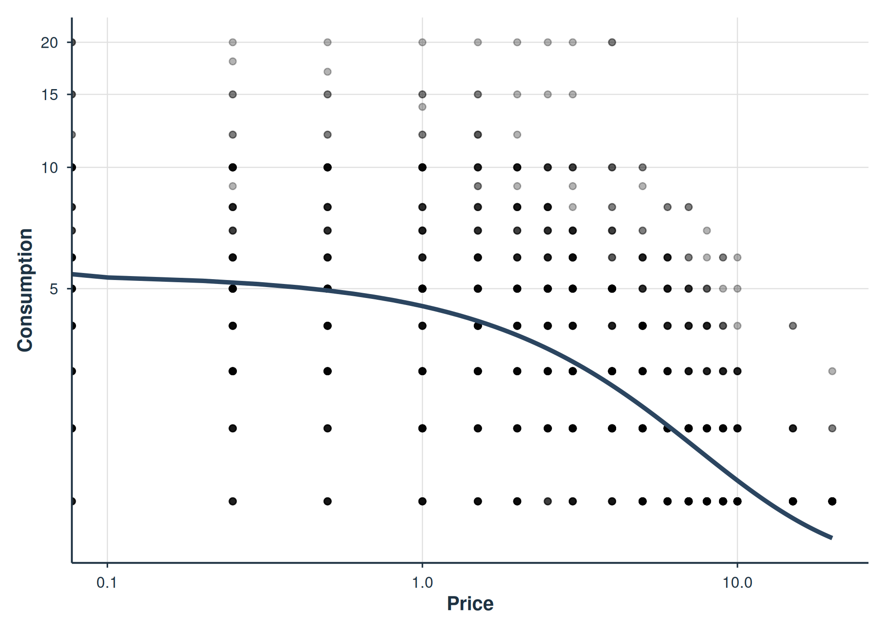
Population demand curve from the exponential equation.
The exponential equation (Hursh & Silberberg, 2008)
models log-transformed consumption and is the most reliable choice for
2-random-effect models. It automatically drops zero-consumption
observations.
Choosing an Equation
fit_demand_tmb() supports four demand equations:
| Equation | Response | Zeros | k | Best for |
|---|---|---|---|---|
"exponential" |
log(Q) | Dropped | Estimated or fixed | Most datasets; robust 2-RE convergence |
"exponentiated" |
Raw Q | Allowed | Estimated or fixed | Data with few zeros; 1-RE models |
"simplified" |
Raw Q | Allowed | None | Simpler model without k |
"zben" |
LL4(Q) | Allowed (via transform) | None | Wide dynamic range with LL4 compression |
Mathematical Specifications
Exponential (Hursh & Silberberg, 2008): \log(Q_{ij}) = \log(Q_{0i}) + k \left(e^{-\alpha_i \cdot Q_{0i} \cdot C_j} - 1\right) + \varepsilon_{ij}
Exponentiated (Koffarnus et al., 2015): Q_{ij} = Q_{0i} \cdot 10^{k \left(e^{-\alpha_i \cdot Q_{0i} \cdot C_j} - 1\right)} + \varepsilon_{ij}
Simplified: Q_{ij} = Q_{0i} \cdot e^{-\alpha_i \cdot Q_{0i} \cdot C_j} + \varepsilon_{ij}
Zero-bounded exponential (zben) (see
src/MixedDemand.h for full specification): \log_{10}(Q_{0i}) \cdot
e^{-\frac{\alpha_i}{\log_{10}(Q_{0i})} \cdot Q_{0i} \cdot C_j} +
\varepsilon_{ij}
where Q_{0i} = \exp(\mathbf{x}_i^\top \boldsymbol{\beta}_{Q_0} + b_i), \alpha_i = \exp(\mathbf{x}_i^\top \boldsymbol{\beta}_\alpha + c_i), and (b_i, c_i) are correlated random effects.
fit_exp <- fit_demand_tmb(dat, equation = "exponential",
random_effects = c("q0", "alpha"), verbose = 0)
# exponentiated converges reliably with 1-RE
fit_expon <- fit_demand_tmb(dat, equation = "exponentiated",
random_effects = "q0", verbose = 0)
fit_simp <- fit_demand_tmb(dat, equation = "simplified",
random_effects = "q0", verbose = 0)
dat$y_ll4 <- ll4(dat$y)
fit_zben <- fit_demand_tmb(dat, y_var = "y_ll4", equation = "zben",
random_effects = "q0", verbose = 0)
data.frame(
equation = c("exponential", "exponentiated", "simplified", "zben"),
random_effects = c("2-RE", "1-RE", "1-RE", "1-RE"),
converged = c(fit_exp$converged, fit_expon$converged,
fit_simp$converged, fit_zben$converged),
AIC = round(c(AIC(fit_exp), AIC(fit_expon),
AIC(fit_simp), AIC(fit_zben)), 1)
)
#> equation random_effects converged AIC
#> 1 exponential 2-RE TRUE 551.1
#> 2 exponentiated 1-RE TRUE 6744.5
#> 3 simplified 1-RE TRUE 6743.4
#> 4 zben 1-RE TRUE -893.6Note: AIC values are not directly comparable across equations because they model different response scales (log Q vs raw Q vs LL4(Q)).
Convergence tip: The exponential
equation is the most reliable for 2-random-effect models. The
exponentiated equation works well with 1-RE but can
struggle to converge with 2-RE, especially with smaller samples.
Random Effects Structure
fit_demand_tmb() supports two configurations:
-
random_effects = "q0"– 1-RE: random intercept on Q_0 only; \alpha is constant across subjects -
random_effects = c("q0", "alpha")– 2-RE: random effects on both Q_0 and \alpha with an estimated correlation
fit_1re <- fit_demand_tmb(dat, equation = "exponential",
random_effects = "q0", verbose = 0)
fit_2re <- fit # reuse from Quick Start (exponential, 2-RE)
compare_models(fit_1re, fit_2re)
#>
#> Model Comparison
#> ==================================================
#>
#> Model Class Backend nobs df logLik AIC BIC
#> Model_1 beezdemand_tmb TMB_mixed 1131 5 -639.5903 1289.1807 1314.3350
#> Model_2 beezdemand_tmb TMB_mixed 1131 7 -268.5364 551.0729 586.2889
#> delta_AIC delta_BIC
#> 738.1078 728.0461
#> 0.0000 0.0000
#>
#> Best model by BIC: Model_2
#>
#> Likelihood Ratio Tests:
#> ----------------------------------------
#> Comparison LR_stat df p_value
#> Model_1 vs Model_2 742.1078 2 <2e-16
#>
#> Notes:
#> - LRT nesting assumption not verified.A significant LRT p-value and substantially lower AIC/BIC for the 2-RE model indicate that subjects differ meaningfully in both intensity (Q_0) and elasticity (\alpha).
head(nlme::ranef(fit_2re))
#> id b_i c_i
#> 1 16 -0.8553362 0.38606385
#> 2 24 0.0892118 -0.04866941
#> 3 33 0.6114902 -0.35231538
#> 4 40 0.1527067 0.50020943
#> 5 42 0.7378561 -0.89300299
#> 6 49 -0.2956440 0.40087909The b_i column is the random deviation on log(Q_0) and c_i is the random
deviation on log(\alpha) for each
subject.
Estimating vs. Fixing k
For the exponential and exponentiated
equations, k scales the range of the
demand curve. By default it is estimated
(estimate_k = TRUE). You can fix it at the conventional
value of 2 (Hursh & Silberberg, 2008):
fit_k_free <- fit_demand_tmb(dat, equation = "exponential",
random_effects = c("q0", "alpha"),
estimate_k = TRUE, verbose = 0)
fit_k_fixed <- fit_demand_tmb(dat, equation = "exponential",
random_effects = c("q0", "alpha"),
estimate_k = FALSE, k = 2, verbose = 0)
data.frame(
k = c("estimated", "fixed at 2"),
converged = c(fit_k_free$converged, fit_k_fixed$converged),
AIC = round(c(AIC(fit_k_free), AIC(fit_k_fixed)), 1),
k_value = round(c(exp(coef(fit_k_free)[["log_k"]]), 2), 3)
)
#> k converged AIC k_value
#> 1 estimated TRUE 551.1 1.405
#> 2 fixed at 2 TRUE 607.1 2.000The simplified and zben equations do not
use a k parameter.
Examining Results
Summary and Coefficients
summary(fit_2re)
#>
#> TMB Mixed-Effects Demand Model Summary
#> ==================================================
#>
#> Equation: exponential
#> Backend: TMB_mixed
#> Convergence: Yes
#> Subjects: 99 Observations: 1131
#>
#> --- Fixed Effects ---
#> term estimate std.error statistic p.value
#> Q0:(Intercept) 5.4434 0.4171 13.0512 < 2e-16
#> alpha:(Intercept) 0.0110 0.0012 9.4171 < 2e-16
#> log_k 0.3399 0.0276 12.2980 < 2e-16
#> logsigma_b -0.2940 0.0748 -3.9297 8.5e-05
#> logsigma_c -0.0952 0.0807 -1.1796 0.238151
#> logsigma_e -1.4906 0.0231 -64.4069 < 2e-16
#> rho_bc_raw -0.4812 0.1310 -3.6743 0.000239
#>
#> --- Variance Components ---
#> Component Estimate
#> sigma_b (Q0 RE SD) 0.7453
#> sigma_e (Residual SD) 0.2252
#> sigma_c (alpha RE SD) 0.9091
#>
#> --- RE Correlations ---
#> Component Estimate
#> rho_bc (Q0-alpha correlation) -0.4472
#>
#> --- Fit Statistics ---
#> Log-likelihood: -268.54
#> AIC: 551.07
#> BIC: 586.29
#>
#> --- Population Demand Metrics ---
#> Pmax: 8.6507 Omax: 12.6853 Method: analytic_lambert_w
#>
#> --- Individual Parameter Summaries ---
#> Q0: Min=1.0764 Med=5.8144 Mean=6.9916 Max=27.2636
#> alpha: Min=0.0012 Med=0.0117 Mean=0.0180 Max=0.1803
#> Pmax: Min=0.3701 Med=8.9913 Mean=10.5038 Max=54.8220
#> Omax: Min=0.7770 Med=11.9321 Mean=17.2419 Max=120.2685
#>
#> Notes:
#> * 569 zero-consumption observations dropped for equation='exponential'.
tidy(fit_2re)
#> # A tibble: 7 × 9
#> term estimate std.error statistic p.value component estimate_scale
#> <chr> <dbl> <dbl> <dbl> <dbl> <chr> <chr>
#> 1 Q0:(Intercept) 5.44 0.417 13.1 6.25e-39 consumpt… natural
#> 2 alpha:(Interce… 0.0110 0.00117 9.42 4.64e-21 consumpt… natural
#> 3 log_k 0.340 0.0276 12.3 9.29e-35 consumpt… log
#> 4 logsigma_b -0.294 0.0748 -3.93 8.50e- 5 variance natural
#> 5 logsigma_c -0.0952 0.0807 -1.18 2.38e- 1 variance natural
#> 6 logsigma_e -1.49 0.0231 -64.4 0 variance natural
#> 7 rho_bc_raw -0.481 0.131 -3.67 2.39e- 4 variance natural
#> # ℹ 2 more variables: term_display <chr>, estimate_internal <dbl>
glance(fit_2re)
#> # A tibble: 1 × 10
#> model_class backend equation nobs n_subjects n_random_effects converged
#> <chr> <chr> <chr> <int> <int> <int> <lgl>
#> 1 beezdemand_tmb TMB_mixed exponent… 1131 99 2 TRUE
#> # ℹ 3 more variables: logLik <dbl>, AIC <dbl>, BIC <dbl>Subject-Specific Parameters
Each subject gets empirical Bayes estimates of Q_0, \alpha, P_{max}, and O_{max}:
spars <- get_subject_pars(fit_2re)
head(spars)
#> id b_i c_i Q0 alpha Pmax Omax
#> 1 16 -0.8553362 0.38606385 2.314197 0.016246308 13.830984 8.622529
#> 2 24 0.0892118 -0.04866941 5.951307 0.010518467 8.306984 13.317936
#> 3 33 0.6114902 -0.35231538 10.033096 0.007763913 6.675633 18.042997
#> 4 40 0.1527067 0.50020943 6.341439 0.018210736 4.502905 7.692400
#> 5 42 0.7378561 -0.89300299 11.384527 0.004521297 10.102529 30.983204
#> 6 49 -0.2956440 0.40087909 4.050154 0.016488793 7.786597 8.495726
spars |>
summarise(
across(c(Q0, alpha, Pmax, Omax),
list(median = median, mean = mean, sd = sd),
.names = "{.col}_{.fn}")
) |>
tidyr::pivot_longer(everything(), names_to = c("parameter", "stat"),
names_sep = "_") |>
tidyr::pivot_wider(names_from = stat, values_from = value) |>
mutate(across(where(is.numeric), \(x) round(x, 4)))
#> # A tibble: 4 × 4
#> parameter median mean sd
#> <chr> <dbl> <dbl> <dbl>
#> 1 Q0 5.81 6.99 5.01
#> 2 alpha 0.0117 0.018 0.0238
#> 3 Pmax 8.99 10.5 7.53
#> 4 Omax 11.9 17.2 17.3Amplitude–Persistence Decomposition
calculate_amplitude_persistence() collapses the
per-subject parameters into two latent factors used in behavioral
economic indices: Amplitude (intensity of demand,
primarily Q_0) and
Persistence (sensitivity to price, drawn from P_{max}, O_{max}, and 1/\alpha). The TMB method extracts subject
parameters from fit$subject_pars and delegates to the
default Z-score implementation, so the result is comparable across model
tiers.
ap <- calculate_amplitude_persistence(fit_2re)
head(ap)
#> id z_Q0 z_Pmax z_Omax z_inv_alpha Amplitude Persistence
#> 1 16 -0.9332307 0.4415823 -0.49884179 -0.49884179 -0.9332307 -0.1853671
#> 2 24 -0.2075585 -0.2915658 -0.22709601 -0.22709601 -0.2075585 -0.2485859
#> 3 33 0.6068358 -0.5080794 0.04636602 0.04636602 0.6068358 -0.1384491
#> 4 40 -0.1297197 -0.7964450 -0.55267282 -0.55267282 -0.1297197 -0.6339302
#> 5 42 0.8764718 -0.0532601 0.79527804 0.79527804 0.8764718 0.5124320
#> 6 49 -0.5868744 -0.3606318 -0.50618050 -0.50618050 -0.5868744 -0.4576643
ap |>
summarise(
Amplitude_mean = mean(Amplitude, na.rm = TRUE),
Persistence_mean = mean(Persistence, na.rm = TRUE),
Amplitude_sd = sd(Amplitude, na.rm = TRUE),
Persistence_sd = sd(Persistence, na.rm = TRUE)
)
#> Amplitude_mean Persistence_mean Amplitude_sd Persistence_sd
#> 1 7.330959e-17 -6.519368e-17 1 0.8497967By construction, both factors are sample-standardized (mean 0, SD 1
within the fitted dataset). For cross-sample comparisons, supply
external basis_means and basis_sds so the
standardization uses a fixed reference.
Confidence Intervals
confint(fit_2re)
#> # A tibble: 7 × 5
#> term estimate conf.low conf.high level
#> <chr> <dbl> <dbl> <dbl> <dbl>
#> 1 Q0:(Intercept) 1.69 1.54 1.84 0.95
#> 2 alpha:(Intercept) -4.51 -4.71 -4.30 0.95
#> 3 log_k 0.340 0.286 0.394 0.95
#> 4 logsigma_b -0.294 -0.441 -0.147 0.95
#> 5 logsigma_c -0.0952 -0.254 0.0630 0.95
#> 6 logsigma_e -1.49 -1.54 -1.45 0.95
#> 7 rho_bc_raw -0.481 -0.738 -0.225 0.95By default, confidence intervals are on the internal (log) scale. Use
report_space = "natural" for back-transformed
intervals:
confint(fit_2re, report_space = "natural")
#> # A tibble: 7 × 5
#> term estimate conf.low conf.high level
#> <chr> <dbl> <dbl> <dbl> <dbl>
#> 1 Q0:(Intercept) 5.44 4.68 6.33 0.95
#> 2 alpha:(Intercept) 0.0110 0.00897 0.0136 0.95
#> 3 log_k 1.40 1.33 1.48 0.95
#> 4 logsigma_b -0.294 -0.441 -0.147 0.95
#> 5 logsigma_c -0.0952 -0.254 0.0630 0.95
#> 6 logsigma_e -1.49 -1.54 -1.45 0.95
#> 7 rho_bc_raw -0.481 -0.738 -0.225 0.95Predictions
Three prediction types are available:
# Fitted values for observed data
pred_resp <- predict(fit_2re, type = "response")
head(pred_resp)
#> # A tibble: 6 × 9
#> id gender age binges totdrinks tothours x y .fitted
#> <fct> <chr> <dbl> <dbl> <dbl> <dbl> <dbl> <dbl> <dbl>
#> 1 16 Male 30 0 1 1 0 2 0.839
#> 2 16 Male 30 0 1 1 0.25 2 0.809
#> 3 16 Male 30 0 1 1 0.5 2 0.779
#> 4 16 Male 30 0 1 1 1 2 0.720
#> 5 16 Male 30 0 1 1 1.5 2 0.662
#> 6 16 Male 30 0 1 1 2 2 0.605
# Population demand curve at specific prices
predict(fit_2re, type = "demand", prices = c(0, 0.5, 1, 2, 5, 10, 20))
#> # A tibble: 7 × 2
#> price .fitted
#> <dbl> <dbl>
#> 1 0 1.69
#> 2 0.5 1.60
#> 3 1 1.51
#> 4 2 1.33
#> 5 5 0.855
#> 6 10 0.233
#> 7 20 -0.568
# Subject-level parameter estimates (same as get_subject_pars)
pred_pars <- predict(fit_2re, type = "parameters")
head(pred_pars)
#> # A tibble: 6 × 7
#> id b_i c_i Q0 alpha Pmax Omax
#> <chr> <dbl> <dbl> <dbl> <dbl> <dbl> <dbl>
#> 1 16 -0.855 0.386 2.31 0.0162 13.8 8.62
#> 2 24 0.0892 -0.0487 5.95 0.0105 8.31 13.3
#> 3 33 0.611 -0.352 10.0 0.00776 6.68 18.0
#> 4 40 0.153 0.500 6.34 0.0182 4.50 7.69
#> 5 42 0.738 -0.893 11.4 0.00452 10.1 31.0
#> 6 49 -0.296 0.401 4.05 0.0165 7.79 8.50Population Metrics
calc_group_metrics(fit_2re)
#> $Pmax
#> beta_alpha
#> 8.650689
#>
#> $Omax
#> beta_alpha
#> 12.68528
#>
#> $Qmax
#> beta_q0
#> 1.46639
#>
#> $elasticity_at_pmax
#> beta_alpha
#> -1
#>
#> $method
#> [1] "analytic_lambert_w"Visualization
plot(fit_2re, type = "demand")
Population-level demand curve with confidence band.
plot(fit_2re, type = "individual")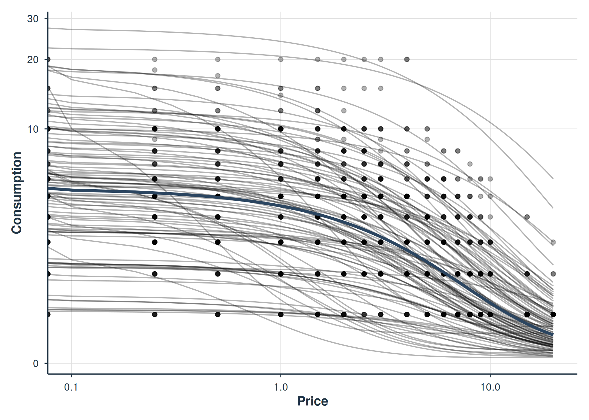
Individual demand curves for a random sample of subjects.
plot(fit_2re, type = "parameters")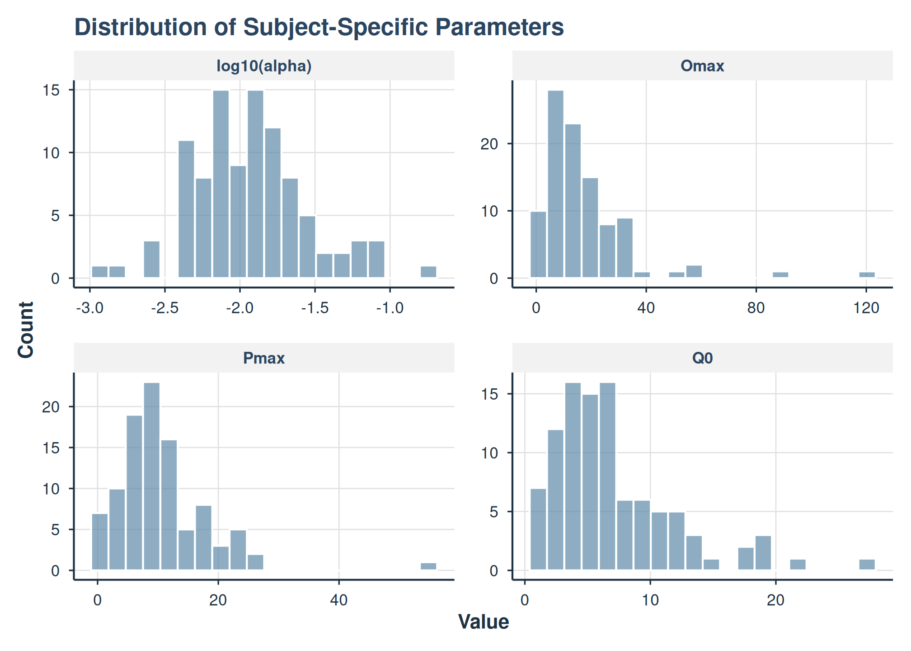
Distribution of subject-specific demand parameters.
Diagnostics
After fitting, assess model health with the built-in diagnostic tools.
The fit object exposes a hessian_pd field that flags
whether the Hessian returned by TMB::sdreport() is positive
definite. When FALSE, standard errors, p-values, and Wald
confidence intervals derived from the Hessian should be treated as
unreliable; the warning is also surfaced as a note in
summary() output and as a hessian_warning
attribute on tidy() output.
fit_2re$hessian_pd
#> [1] TRUE
# Model health check — convergence, variance components, residual stats,
# and (since 0.3.0) Hessian positive-definiteness.
check_demand_model(fit_2re)
#>
#> Model Diagnostics
#> ==================================================
#> Model class: beezdemand_tmb
#>
#> Convergence:
#> Status: Converged
#>
#> Random Effects:
#> sigma_b variance: 0.7453
#> sigma_c variance: 0.9091
#>
#> Residuals:
#> Mean: -0.0001171
#> SD: 0.2069
#> Range: [-0.9401, 0.7515]
#> Outliers: 12 observations
#>
#> --------------------------------------------------
#> Issues Detected (1):
#> 1. Detected 12 potential outliers (|resid| > 3 SD)
#>
#> Recommendations:
#> - Investigate outlying observations
# Augment with fitted values and residuals
aug <- augment(fit_2re)
head(aug[, c("id", "x", "y", ".fitted", ".resid", ".std_resid")])
#> # A tibble: 6 × 6
#> id x y .fitted .resid .std_resid
#> <fct> <dbl> <dbl> <dbl> <dbl> <dbl>
#> 1 16 0 2 0.839 -0.146 -0.648
#> 2 16 0.25 2 0.809 -0.116 -0.513
#> 3 16 0.5 2 0.779 -0.0857 -0.380
#> 4 16 1 2 0.720 -0.0266 -0.118
#> 5 16 1.5 2 0.662 0.0315 0.140
#> 6 16 2 2 0.605 0.0884 0.392
# Q-Q plot of random effects
plot_qq(fit_2re)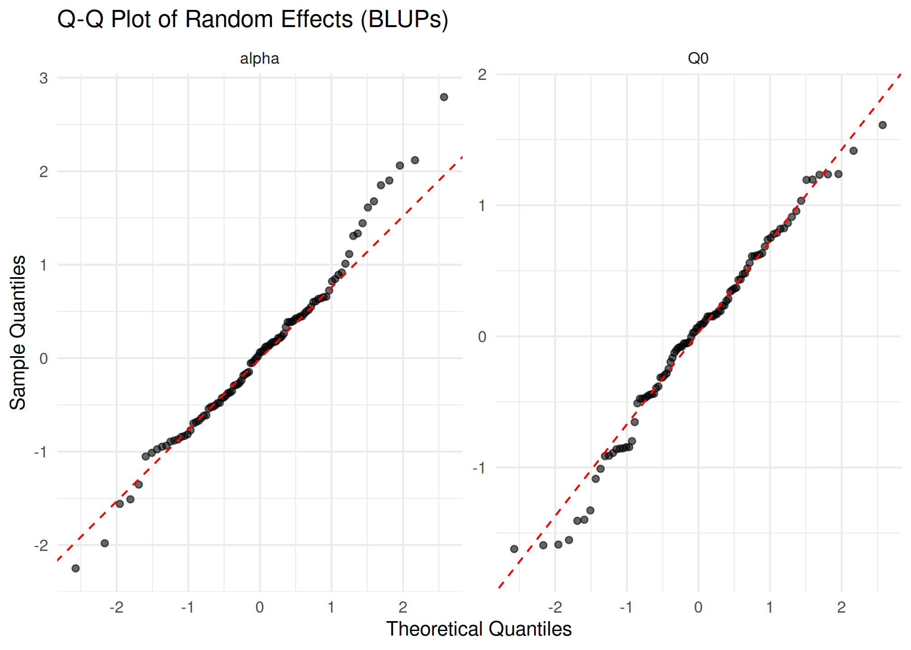
Q-Q plots of subject-level random effects.
# Random effects diagnostic panels
plot_re_diagnostics(fit_2re)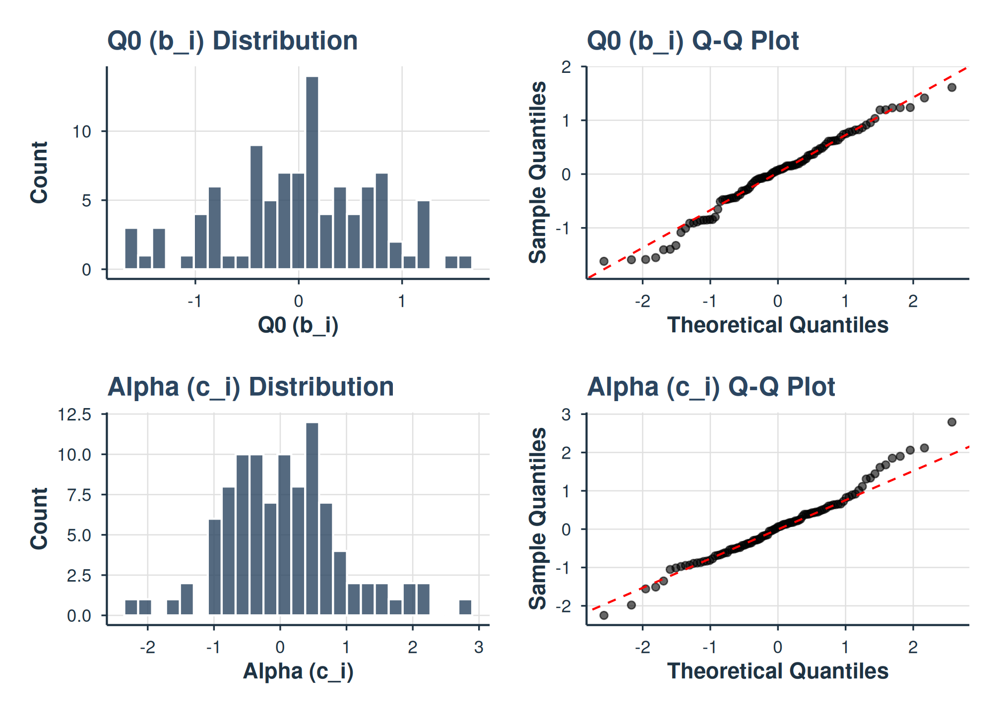
Random effects diagnostic panels.
# Residual plot — standard in every modeling workflow
plot_residuals(fit_2re, type = "fitted")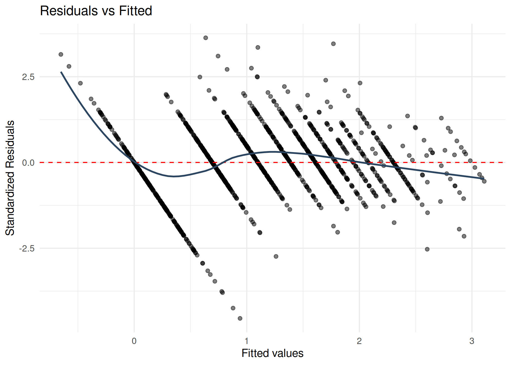
Residuals vs fitted values for the 2-RE exponential model.
These diagnostics help identify:
- Q-Q plots: Non-normality of random effects (heavy tails, outliers)
-
check_demand_model(): Convergence issues, boundary estimates, residual patterns - Augmented data: Observation-level residuals for identifying poorly fitting subjects
- Residual plots: Heteroscedasticity, non-linearity, or outliers in the fitted vs residual pattern
Advanced Visualization
beezdemand provides several specialized plots beyond the
standard plot() method. These work with any
beezdemand_tmb object.
Expenditure and Elasticity
The expenditure curve shows total spending (P \times Q) as a function of price, with vertical and horizontal reference lines at P_{max} and O_{max}:
plot_expenditure(fit_2re)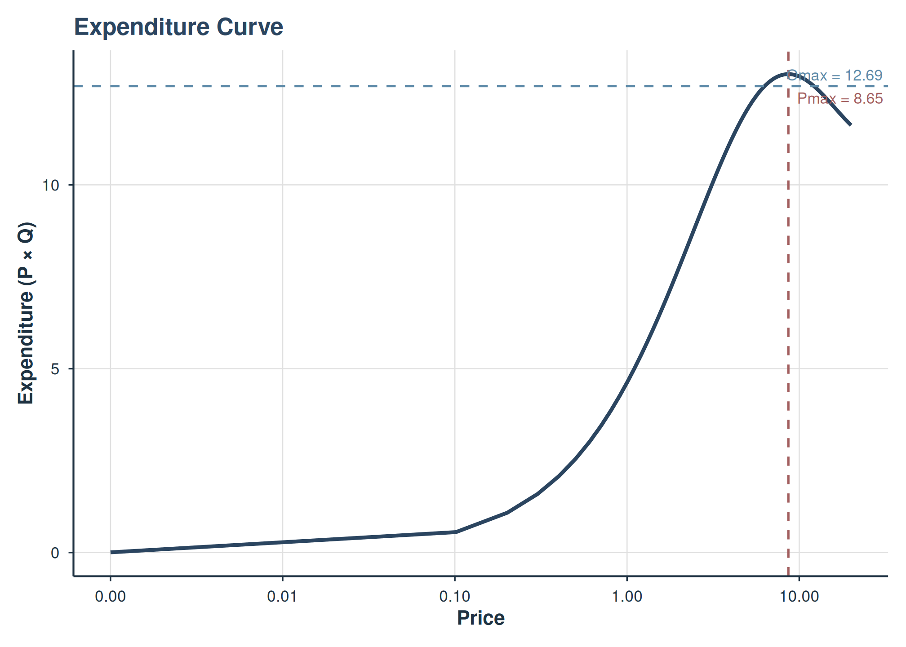
Expenditure curve with Pmax and Omax reference lines.
The elasticity curve shows how responsive demand is to price changes. The dashed line at -1 marks unit elasticity — prices above this threshold produce elastic demand:
plot_elasticity(fit_2re)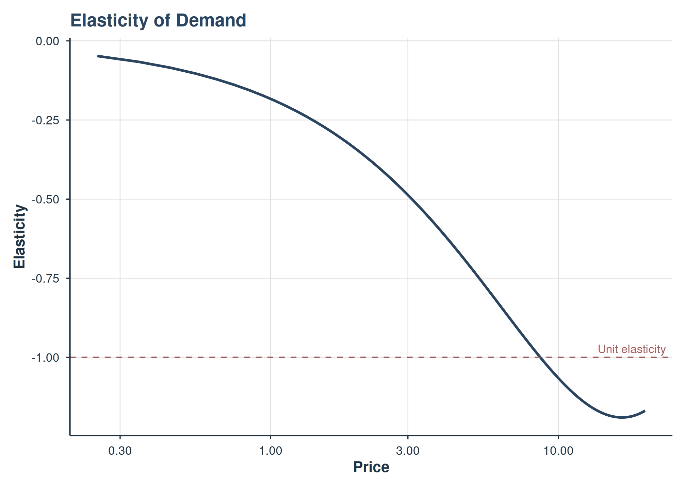
Own-price elasticity curve with unit elasticity reference.
Loss Surface and Profile
The loss surface visualizes the sum-of-squared-residuals landscape over a grid of (Q_0, \alpha) values, with the MLE marked. This helps assess identifiability — a sharp, well-defined minimum indicates good identification:
plot_loss_surface(fit_2re)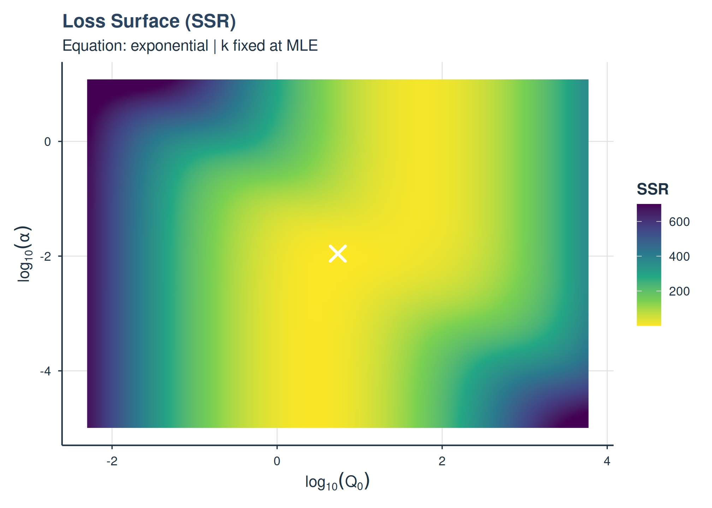
2D loss surface (SSR) over the Q0-alpha parameter space.
Profile plots show 1D slices through the loss surface, fixing one parameter at its MLE and varying the other:
plot_loss_profile(fit_2re)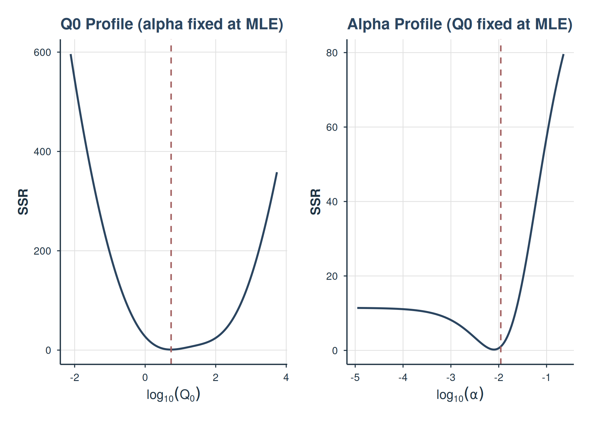
1D loss profiles for Q0 and alpha.
Subject Heterogeneity
Visualize the distribution of subject-level \alpha estimates to assess heterogeneity in price sensitivity:
plot_alpha_distribution(fit_2re)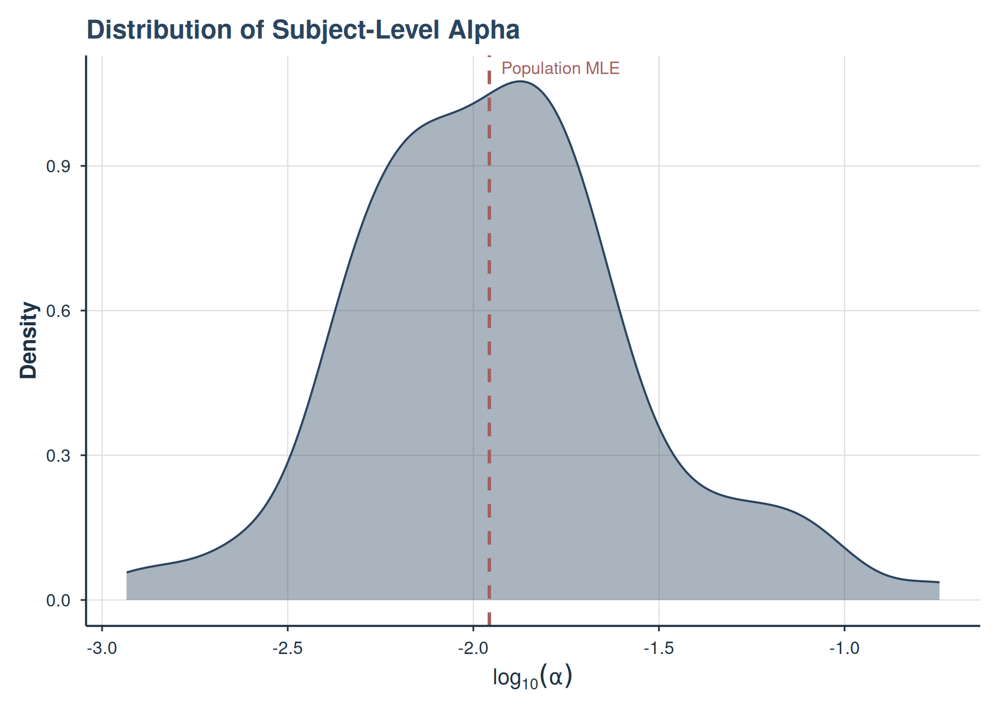
Distribution of subject-level alpha (elasticity) estimates.
Multi-Model Comparison
Overlay demand curves from multiple models to visualize how different specifications affect the predicted demand function:
plot_demand_overlay(fit_1re, fit_2re, labels = c("1-RE", "2-RE"))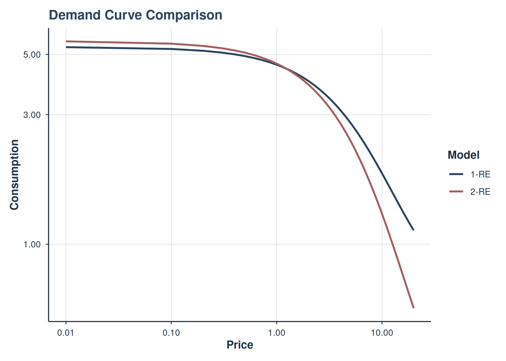
Demand curves from 1-RE and 2-RE models overlaid.
Compare parameter distributions side by side:
plot_model_comparison(fit_1re, fit_2re, labels = c("1-RE", "2-RE"))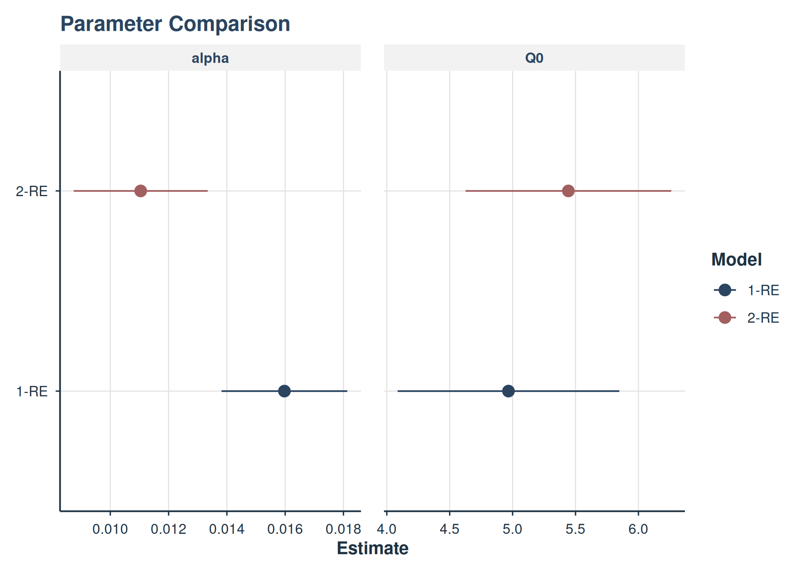
Side-by-side parameter estimates from 1-RE and 2-RE models.
Group Comparisons
To test whether demand parameters differ by group, pass factor
variables via the factors argument. This adds fixed effects
to the design matrices for both Q_0 and
\alpha.
# Filter to Male/Female for a clean two-level comparison
dat_mf <- dat |> filter(gender %in% c("Male", "Female"))
fit_gender <- fit_demand_tmb(
dat_mf,
y_var = "y", x_var = "x", id_var = "id",
equation = "exponential",
factors = "gender",
random_effects = c("q0", "alpha"),
verbose = 0
)
fit_gender
#>
#> TMB Mixed-Effects Demand Model
#>
#> Call:
#> fit_demand_tmb(data = dat_mf, y_var = "y", x_var = "x", id_var = "id",
#> equation = "exponential", random_effects = c("q0", "alpha"),
#> factors = "gender", verbose = 0)
#>
#> Equation: exponential
#> Convergence: Yes
#> Number of subjects: 99
#> Number of observations: 1131
#> Observations dropped (zeros): 569
#> Random effects: 2 (q0, alpha)
#> Log-likelihood: -267.38
#> AIC: 552.76
#>
#> Fixed Effects:
#> Q0.0 Q0.1 alpha.0 alpha.1 log_k logsigma_b logsigma_c
#> 1.6093 0.1941 -4.4026 -0.2493 0.3404 -0.3021 -0.1074
#> logsigma_e rho_bc_raw
#> -1.4905 -0.4591
#>
#> Use summary() for full results.Estimated Marginal Means
get_demand_param_emms(fit_gender, param = "Q0")
#> # A tibble: 2 × 6
#> level estimate estimate_log std.error conf.low conf.high
#> <chr> <dbl> <dbl> <dbl> <dbl> <dbl>
#> 1 gender=Male 6.07 1.80 0.115 4.85 7.60
#> 2 gender=Female 5.00 1.61 0.102 4.10 6.10
get_demand_param_emms(fit_gender, param = "alpha")
#> # A tibble: 2 × 6
#> level estimate estimate_log std.error conf.low conf.high
#> <chr> <dbl> <dbl> <dbl> <dbl> <dbl>
#> 1 gender=Male 0.00954 -4.65 0.155 0.00705 0.0129
#> 2 gender=Female 0.0122 -4.40 0.133 0.00943 0.0159EMMs are reported on both the natural scale (estimate)
and log scale (estimate_log). The natural-scale estimates
represent the population-average Q_0 or
\alpha for each group.
Pairwise Comparisons
get_demand_comparisons(fit_gender, param = "Q0")
#> # A tibble: 1 × 9
#> contrast estimate_log estimate_ratio std.error statistic p.value.raw p.value
#> <chr> <dbl> <dbl> <dbl> <dbl> <dbl> <dbl>
#> 1 gender=Ma… 0.194 1.21 0.153 1.27 0.205 0.205
#> # ℹ 2 more variables: conf.low <dbl>, conf.high <dbl>
get_demand_comparisons(fit_gender, param = "alpha")
#> # A tibble: 1 × 9
#> contrast estimate_log estimate_ratio std.error statistic p.value.raw p.value
#> <chr> <dbl> <dbl> <dbl> <dbl> <dbl> <dbl>
#> 1 gender=Ma… -0.249 0.779 0.195 -1.28 0.202 0.202
#> # ℹ 2 more variables: conf.low <dbl>, conf.high <dbl>The estimate_ratio column gives the multiplicative ratio
between groups on the natural scale (e.g., a ratio of 1.34 means Group
A’s Q_0 is 34% higher than Group
B’s).
Factor interaction and continuous covariate sections are skipped
in fast render mode. Set BEEZDEMAND_VIGNETTE_MODE=full to
include them.
Model Comparison
Use compare_models() to compare nested TMB models via
likelihood ratio test, AIC, and BIC:
compare_models(fit_1re, fit_2re)
#>
#> Model Comparison
#> ==================================================
#>
#> Model Class Backend nobs df logLik AIC BIC
#> Model_1 beezdemand_tmb TMB_mixed 1131 5 -639.5903 1289.1807 1314.3350
#> Model_2 beezdemand_tmb TMB_mixed 1131 7 -268.5364 551.0729 586.2889
#> delta_AIC delta_BIC
#> 738.1078 728.0461
#> 0.0000 0.0000
#>
#> Best model by BIC: Model_2
#>
#> Likelihood Ratio Tests:
#> ----------------------------------------
#> Comparison LR_stat df p_value
#> Model_1 vs Model_2 742.1078 2 <2e-16
#>
#> Notes:
#> - LRT nesting assumption not verified.Valid comparisons require models fit on the same data with the same equation and response scale. Models with different equations (e.g., exponential vs exponentiated) model different responses and cannot be compared via AIC.
Convergence Tips
If a model fails to converge, try these strategies in order:
| Strategy | How | When |
|---|---|---|
| Reduce random effects | random_effects = "q0" |
2-RE models struggling |
| Use exponential equation | equation = "exponential" |
Exponentiated/simplified not converging |
| Fix k | estimate_k = FALSE, k = 2 |
k estimate drifting to extreme values |
| Increase iterations | tmb_control = list(iter_max = 2000) |
“false convergence” messages |
| Try L-BFGS-B | tmb_control = list(optimizer = "L-BFGS-B") |
nlminb not making progress |
| Set parameter bounds | tmb_control = list(lower = ..., upper = ...) |
Estimates at boundaries |
| Warm start | tmb_control = list(warm_start = prev_fit$opt$par) |
Refining a near-converged fit |
# Switch optimizer
fit <- fit_demand_tmb(
dat, equation = "exponential",
tmb_control = list(optimizer = "L-BFGS-B"),
verbose = 0
)
# Warm-start from a previous fit
fit2 <- fit_demand_tmb(
dat, equation = "exponential",
tmb_control = list(warm_start = fit$opt$par),
verbose = 0
)
# Apply parameter bounds
fit3 <- fit_demand_tmb(
dat, equation = "exponential",
tmb_control = list(
lower = c(log_k = -2),
upper = c(log_k = 4)
),
verbose = 0
)
# Disable multi-start for faster iteration during exploration
fit4 <- fit_demand_tmb(
dat, equation = "exponential",
multi_start = FALSE,
verbose = 2
)tmb_control Options
| Field | Default | Description |
|---|---|---|
optimizer |
"nlminb" |
"nlminb" or "L-BFGS-B"
|
iter_max |
1000 | Maximum iterations |
eval_max |
2000 | Maximum evaluations (nlminb only) |
rel_tol |
1e-10 | Relative tolerance (nlminb only) |
lower / upper
|
NULL | Named numeric bounds on log-scale parameters |
warm_start |
NULL | Starting values from a previous fit$opt$par
|
trace |
0 | Optimizer trace level |
Choosing Between fit_demand_tmb() and fit_demand_mixed()
| Feature | fit_demand_tmb() |
fit_demand_mixed() |
|---|---|---|
| Backend | TMB (C++, automatic differentiation) | nlme (R, numerical gradients) |
| Equations | exponential, exponentiated, simplified, zben | zben, simplified |
| k parameter | Estimated or fixed | Not available |
| Random effects | 1 or 2 (Q0, alpha) | Configurable via nlme |
| Convergence | Robust (AD + Laplace + multi-start) | Can struggle with nonlinear equations |
| Speed | Fast (compiled C++) | Variable |
| Post-hoc EMMs | get_demand_param_emms() |
get_demand_param_emms() (via emmeans) |
| Factors/covariates | Design matrices | Formula-based |
Prefer fit_demand_tmb() for new work.
fit_demand_mixed() remains useful when you need specific
nlme features like custom correlation structures or when
working with existing pipelines.
References
Hursh, S. R., & Silberberg, A. (2008). Economic demand and essential value. Psychological Review, 115(1), 186–198.
Koffarnus, M. N., Franck, C. T., Stein, J. S., & Bickel, W. K. (2015). A modified exponential behavioral economic demand model to better describe consumption data. Experimental and Clinical Psychopharmacology, 23(6), 504–512.
Kristensen, K., Nielsen, A., Berg, C. W., Skaug, H., & Bell, B. M. (2016). TMB: Automatic differentiation and Laplace approximation. Journal of Statistical Software, 70(5), 1–21.
See Also
-
vignette("fixed-demand")– Individual NLS demand curves -
vignette("mixed-demand")– NLME-based mixed-effects models -
vignette("mixed-demand-advanced")– Advanced topics: multi-factor designs, collapse_levels -
vignette("hurdle-demand-models")– Two-part hurdle models for zero-heavy data -
vignette("model-selection")– Choosing the right demand model